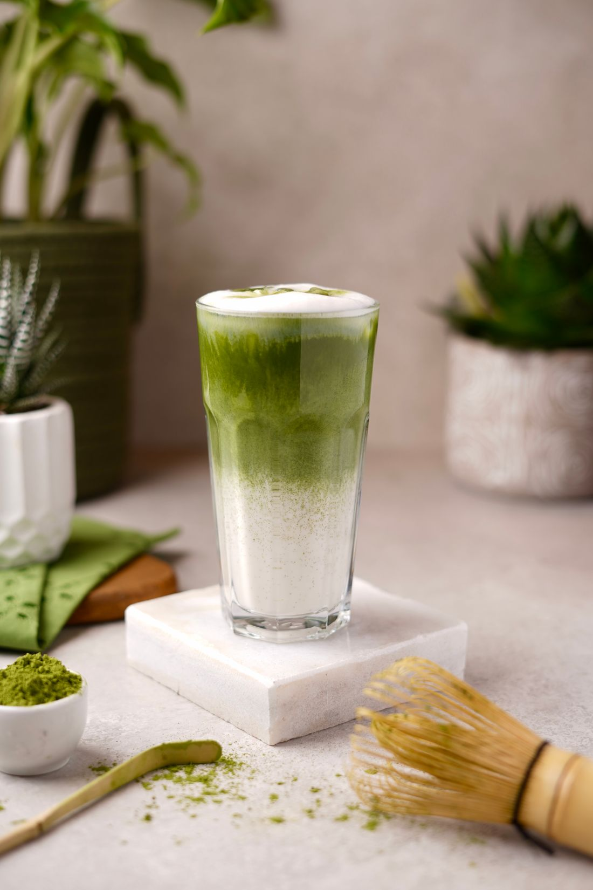

We whisk every order by hand. It takes a little longer, but you can taste the difference in that first sip.
— The Whisk & Leaf team
Come by after school
Upper East Side, NYC · Open daily, 10 AM–6 PM
Stop by for an iced matcha latte or take a seat with a bowl of freshly whisked tea.
See the menu
We whisk every order by hand. It takes a little longer, but you can taste the difference in that first sip.
— The Whisk & Leaf team
Upper East Side, NYC · Open daily, 10 AM–6 PM